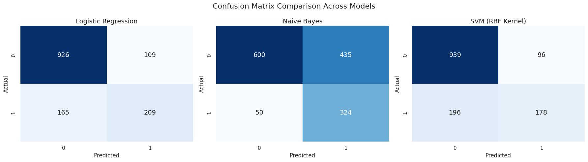

Abstract
Customer churn, the point at which a subscriber cancels their service, is one of the most expensive problems a subscription business can have, because acquiring a new customer typically costs far more than keeping an existing one. This project builds and compares three classification models that predict, from a customer's account and service profile, whether they are likely to leave a fictional telecom provider.
The workflow follows a standard supervised learning pipeline: load and clean the raw records, engineer a numerical feature space through scaling and one-hot encoding, split the data with stratification to preserve class balance, and train three deliberately different algorithms, Logistic Regression, Gaussian Naive Bayes, and a Support Vector Machine with an RBF kernel, on identical folds. Every model is scored on accuracy, precision, recall, F1, and ROC-AUC so that the trade-offs between them are visible rather than assumed.
The headline finding is not that one model is universally "best," but that each optimizes a different notion of correctness: Naive Bayes catches the most churners at the cost of many false alarms, Logistic Regression gives the steadiest overall balance, and the SVM trades recall for precision. Section 07 walks through exactly why, using the confusion matrices and metric charts produced during evaluation.
The Dataset
The data comes from the Telco Customer Churn dataset, originally distributed as an IBM Cognos sample dataset and mirrored on Kaggle by user blastchar at kaggle.com/datasets/blastchar/telco-customer-churn. In the notebook it is pulled programmatically with kagglehub.dataset_download("blastchar/telco-customer-churn") rather than a manual download, so the analysis always starts from the canonical file.
The dataset describes 7,043 customers of a fictional telecommunications company across 21 columns. Each row is one customer; the target column, Churn, records whether that customer left during the most recent billing period. Roughly a quarter of the customers in the dataset churned, which already tells us something important before any modeling begins, the classes are imbalanced, so accuracy alone will be a misleading yardstick and recall and precision need to carry more of the weight later on.
What the columns describe
Demographics
gender, SeniorCitizen, Partner, Dependents, who the customer is.
Account tenure & billing
tenure, Contract, PaperlessBilling, PaymentMethod, MonthlyCharges, TotalCharges.
Core service
PhoneService, MultipleLines, InternetService, DSL, fiber, or none.
Add-on services
OnlineSecurity, OnlineBackup, DeviceProtection, TechSupport, StreamingTV, StreamingMovies.
Identifier
customerID, a unique key with no predictive value, dropped before modeling.
Target
Churn, Yes / No, recoded to 1 / 0 for the classifiers.
It mixes categorical, ordinal, and continuous features in roughly the proportions a real telecom CRM export would have, and its churn signal is genuinely tied to interpretable business levers, contract length, add-on services, and payment method, rather than being random. That makes it a realistic stand-in for the kind of table a retention analytics team would actually work with.
Cleaning the Data
Three small but consequential fixes happen before any feature touches a model. Skipping any one of them would either leak a useless identifier into the feature space or quietly corrupt the numeric columns the models depend on.
df.drop("customerID", axis=1, inplace=True)
df["TotalCharges"] = pd.to_numeric(df["TotalCharges"], errors="coerce")
df["TotalCharges"].fillna(df["TotalCharges"].median(), inplace=True)
df["Churn"] = df["Churn"].map({"Yes": 1, "No": 0})- Dropping the identifier.
customerIDis a unique string per row. It carries no signal about behavior, and one-hot encoding it would have exploded the feature space into thousands of useless dummy columns, so it is removed outright. - Coercing TotalCharges to numeric. In the raw CSV,
TotalChargesis stored as text, and a small number of brand-new customers (zero tenure) have a blank value instead of a number.pd.to_numeric(..., errors="coerce")converts everything it can and turns the unparseable blanks intoNaN, which then get filled with the column's median rather than its mean, the median is robust to the right-skew that billing amounts typically have, so a few very high-spending customers don't drag the imputed value away from what's typical. - Encoding the target.
Churnarrives as the strings"Yes"/"No". Every classifier in this project expects a numeric target, so it is mapped to 1 (churned) and 0 (retained).
Billing data is rarely symmetric, a handful of long-tenure, high-usage customers can pull the mean well above what a typical customer pays. The median is the value at the 50th percentile, so it represents a "typical" customer's total charges without being distorted by outliers, which matters when the value being filled in is standing in for brand-new customers with almost no billing history.
Feature Engineering
Once the data is clean, the columns still aren't in a shape any of the three models can consume directly, Logistic Regression and SVM need every input to be numeric and on a comparable scale, and none of the models can interpret a raw string like "Fiber optic". The notebook handles this with a single ColumnTransformer that treats numeric and categorical columns differently in one coordinated step.
cat_features = X.select_dtypes(include="object").columns
num_features = X.select_dtypes(exclude="object").columns
preprocessor = ColumnTransformer(
transformers=[
("num", StandardScaler(), num_features),
("cat", OneHotEncoder(drop="first"), cat_features)
]
)Standardizing the numeric columns
tenure, MonthlyCharges, and TotalCharges live on completely different numeric ranges, tenure runs from 0–72 months, MonthlyCharges from roughly $18–$120, and TotalCharges into the thousands. Left alone, a model like Logistic Regression or SVM would implicitly treat the columns with larger raw numbers as more important, simply because of their scale. StandardScaler removes that bias by converting every value to a z-score: how many standard deviations above or below the column's own mean that value sits.
x is the raw value, μ the feature's mean, σ its standard deviation. After transformation every numeric feature has mean 0 and standard deviation 1.
One-hot encoding the categorical columns
Columns like Contract (Month-to-month / One year / Two year) or InternetService (DSL / Fiber optic / No) are categories, not quantities, there's no meaningful "distance" between them the way there is between two tenure values. OneHotEncoder turns each category into its own binary column: 1 if a customer belongs to that category, 0 otherwise.
The encoder is configured with drop="first", which removes one category per column from the resulting feature set. This avoids the dummy variable trap: if every category of a column got its own dummy, the dummies would sum to exactly 1 for every row, making that block of columns perfectly collinear with the model's intercept term. Dropping one category doesn't lose information, that category is still fully represented as the case where all of its sibling dummy columns read 0, it simply keeps the design matrix full-rank.
Bundling both transformations into a single ColumnTransformer, and that transformer into a Pipeline alongside the classifier, means the exact same fitted scaler and encoder are reused on the test set and on any future data, there is no risk of accidentally fitting the scaler on the full dataset (which would leak test-set statistics into training) or of the train and test sets ending up with mismatched columns.
Train / Test Split
Before any model sees the data, it is divided into a training set the models learn from and a held-out test set used purely for evaluation, so that the reported metrics reflect performance on customers the model has never encountered.
X_train, X_test, y_train, y_test = train_test_split(
X, y,
test_size=0.2,
stratify=y,
random_state=42
)Three choices matter here:
- An 80 / 20 split. 20% of the 7,043 customers (roughly 1,409 rows) are set aside purely for testing, enough to give stable metric estimates without starving the models of training examples.
- Stratification on the target. Because churners make up roughly a quarter of the dataset, a plain random split could by chance produce a test set with a noticeably different churn rate than the training set.
stratify=yforces both splits to preserve the same proportion of churned and retained customers, so the evaluation set is a fair, representative sample rather than a lucky or unlucky draw. - A fixed random_state. Setting
random_state=42makes the split reproducible, running the notebook again produces the exact same train/test partition, which matters when comparing three models against each other fairly.
The Three Models
The notebook trains three classifiers that make very different assumptions about the data, on purpose, a linear probabilistic model, a generative probabilistic model, and a kernel-based margin model. Each is wrapped in its own Pipeline together with the same preprocessor from Section 03, so preprocessing is identical across all three and any difference in results comes from the algorithm itself.
models = {
"Logistic Regression": Pipeline([
("preprocessor", preprocessor),
("classifier", LogisticRegression(max_iter=1000))
]),
"Naive Bayes": Pipeline([
("preprocessor", preprocessor),
("classifier", GaussianNB())
]),
"SVM (RBF Kernel)": Pipeline([
("preprocessor", preprocessor),
("classifier", SVC(kernel="rbf", probability=True))
])
}Logistic Regression
Logistic Regression starts the same way linear regression does, a weighted sum of the input features, but instead of predicting a churn probability directly with that raw sum (which could run to any positive or negative number), it passes the sum through the sigmoid function, which squashes any real number into the range (0, 1).
z is the linear combination of every scaled/encoded feature; σ(z), the sigmoid, is interpreted as P(Churn = 1 | x).
The model's coefficients β are found by minimizing log loss (binary cross-entropy) between the predicted probabilities and the true 0/1 labels, using an iterative solver (scikit-learn's default L-BFGS, allowed here up to max_iter=1000 to reach convergence on this feature space):
Predictions confidently wrong are penalized far more heavily than predictions that are only mildly off, which is what pushes the coefficients toward genuinely separating the two classes.
At prediction time, any customer with σ(z) ≥ 0.5 is classified as likely to churn. Because the coefficients are directly interpretable, a positive β on MonthlyCharges means higher bills push the probability of churn up, holding everything else constant, this model doubles as an explanatory tool, not just a predictive one.
Gaussian Naive Bayes
Naive Bayes flips the question around. Instead of learning a decision boundary directly, it estimates how the features are distributed within each class during training, then at prediction time asks: given this customer's feature values, which class, churned or retained, would have been more likely to generate them? That question is answered with Bayes' theorem:
The posterior probability of class C given the features x, in terms of the likelihood P(x|C), the prior P(C), and the evidence P(x).
The "naive" part is the assumption that every feature is conditionally independent of every other feature, given the class, i.e. knowing a customer's contract type tells the model nothing extra about their tenure, once churn status is already known. That assumption is rarely exactly true, but it lets the joint likelihood collapse into a simple product, which is what makes the model fast and stable even with many features:
Because the numeric features were standardized in preprocessing, the Gaussian variant models each numeric feature's likelihood within a class as a normal distribution, estimated from that class's own mean μC and variance σ²C in the training data:
A customer is assigned to whichever class C maximizes P(C) · ∏ P(x_i | C), the class whose learned distribution best explains their profile.
Support Vector Machine, RBF Kernel
A linear SVM looks for the hyperplane w·x + b = 0 that separates the two classes while maximizing the margin, the distance between the hyperplane and the nearest point of either class, because a wider margin tends to generalize better to unseen customers. Since real churn data is not linearly separable, the model also allows some points to sit on the wrong side of the margin, controlled by a penalty parameter C that trades off margin width against misclassification.
ξi are slack variables that let a point violate the margin at a cost; C sets how heavily those violations are penalized.
Here the model is fit with an RBF (radial basis function) kernel rather than a plain linear boundary. The kernel trick lets the SVM operate as though it had mapped every customer into a much higher-dimensional space where a non-linear relationship, like "medium tenure and fiber internet and no tech support", becomes linearly separable, without ever explicitly computing that mapping. It does this by replacing the dot product between two points with a similarity function:
γ controls how far the influence of a single training example reaches: a small γ gives a smoother, more linear-feeling boundary; a large γ lets the boundary curve tightly around individual points.
The final classifier is a weighted combination of kernel similarities to the support vectors, the training points closest to the boundary, rather than a single global weight per feature, which is what allows the RBF-kernel SVM to trace decision boundaries that a linear model like Logistic Regression cannot.
The Math Behind the Metrics
Every trained pipeline is scored the same way, with the same five metrics computed on the untouched test set:
results.append({
"Model": name,
"Accuracy": accuracy_score(y_test, y_pred),
"Precision": precision_score(y_test, y_pred),
"Recall": recall_score(y_test, y_pred),
"F1 Score": f1_score(y_test, y_pred),
"AUC": roc_auc_score(y_test, y_prob)
})All five are derived from the same starting point: the confusion matrix, which cross-tabulates what the model predicted against what actually happened.
True Positive (TP)
Model predicted churn, and the customer really did churn.
True Negative (TN)
Model predicted no churn, and the customer stayed.
False Positive (FP)
Model predicted churn, but the customer actually stayed, a false alarm.
False Negative (FN)
Model predicted no churn, but the customer actually left, a missed churner.
Accuracy
The share of all predictions that were correct, but with roughly 3 in 4 customers not churning, a model that always predicts "stays" would already score around 73–74% on accuracy alone. That's why it's reported here but never trusted on its own.
Precision
Of every customer the model flagged as a churn risk, what fraction actually churned? Low precision means a retention team following the model's flags would be chasing a lot of customers who were never going to leave.
Recall (Sensitivity)
Of every customer who actually churned, what fraction did the model catch? This is usually the metric a retention team cares about most, because a missed churner (FN) is a lost customer the company never got the chance to intervene with.
F1 Score
The harmonic mean of precision and recall, it only stays high when both are reasonably high, which makes it a fairer single-number summary than accuracy when the classes are imbalanced.
ROC-AUC
Accuracy, precision, recall, and F1 all depend on the 0.5 probability cutoff used to turn a predicted probability into a Yes/No decision. ROC-AUC sidesteps that choice: it sweeps the decision threshold from 0 to 1, plots the true positive rate against the false positive rate at every threshold, and measures the area under that curve.
An AUC of 1.0 means the model can perfectly separate churners from non-churners at some threshold; 0.5 means it does no better than randomly guessing. Because it's threshold-independent, AUC is a good measure of how much genuine separating signal a model has learned, before any business decision about where to draw the line.
In a churn-prevention context, the cost of the two error types is rarely symmetric. A false positive costs a discount coupon or a phone call to a customer who was never going to leave. A false negative costs the customer entirely, and the revenue that would have funded the retention offer in the first place. That asymmetry is why, in Section 07, recall is treated as at least as important as precision or raw accuracy when comparing the three models.
Results & Comparison
All three pipelines were fit on the same training set and scored on the same held-out test set of roughly 1,409 customers. Here is exactly what came out of the notebook's evaluation loop:
| Model | Accuracy | Precision | Recall | F1 Score | AUC |
|---|---|---|---|---|---|
| Logistic Regression | 0.8055 | 0.6572 | 0.5588 | 0.6040 | 0.8420 |
| Naive Bayes | 0.6558 | 0.4269 | 0.8663 | 0.5719 | 0.8093 |
| SVM (RBF Kernel) | 0.7928 | 0.6496 | 0.4759 | 0.5494 | 0.7927 |
Values as printed by results_df in the notebook, test set only.
Reading the confusion matrices
The three matrices below make the trade-off tangible in a way the summary table alone doesn't. Each heatmap shows the same test set, run through a different model.

Naive Bayes visibly predicts "churn" far more liberally than the other two models, it correctly catches the largest number of true churners, but at the cost of also flagging a large number of customers who were never going to leave, which is exactly what its low 42.7% precision reflects. The SVM sits at the other extreme: it is more conservative about calling a customer a churn risk, which keeps its false-positive count down but means it misses more than half of the customers who actually churn (recall of 47.6%). Logistic Regression lands in between, missing fewer churners than the SVM while raising fewer false alarms than Naive Bayes.
Metrics side by side
![Bar chart comparing accuracy, precision, recall, F1, and AUC across the three models]()
The bar chart makes the asymmetry between Naive Bayes and the other two models the clearest: its recall bar towers over the other models', while its precision and accuracy bars fall well below them. Logistic Regression and the SVM track each other fairly closely across accuracy, precision, and AUC, but diverge on recall, the metric that, per Section 06, tends to matter most for a retention use case.
Naive Bayes has the worst accuracy of the three models (65.6%) but the second-best AUC (0.809), close behind Logistic Regression's 0.842 and clearly ahead of the SVM's 0.793. That gap exists because AUC measures separating power across every possible decision threshold, while accuracy is locked to the default 0.5 cutoff. It suggests Naive Bayes' underlying probability estimates aren't badly calibrated so much as its default threshold is simply not well matched to this problem's class imbalance, a threshold other than 0.5 would likely improve its precision/recall balance without touching the model itself.
Conclusion
No single model dominates on every metric, which is itself the finding worth taking away: the "best" model depends on what a retention team is optimizing for, not on which algorithm sounds most sophisticated.
- If the goal is a balanced, deployable default, reasonably few false alarms, a solid share of churners caught, and coefficients a business stakeholder can actually interpret, Logistic Regression is the strongest all-round choice here, leading on accuracy, precision, and AUC.
- If the goal is to miss as few churners as possible, and the cost of a false alarm (an unnecessary retention offer) is genuinely low compared to the cost of losing a customer outright, Naive Bayes' 86.6% recall makes it the more defensible choice, provided the business is prepared to act on a much longer list of flagged customers.
- The RBF-kernel SVM, in this configuration, did not clearly outperform the simpler Logistic Regression on any metric while being the most computationally expensive of the three to train, a reminder that a more flexible, non-linear model isn't automatically the better one for a given dataset and feature set.
A natural next step beyond this comparison would be to move past the default 0.5 probability threshold, picking a threshold that reflects the actual cost ratio between a false positive and a false negative, and to inspect Logistic Regression's coefficients directly to see which specific services, contract types, or billing patterns are driving churn risk upward, turning this from a prediction exercise into an actionable retention strategy.
References
- Dataset: Telco Customer Churn, IBM sample dataset, hosted on Kaggle by blastchar, kaggle.com/datasets/blastchar/telco-customer-churn, retrieved programmatically via
kagglehub. - Libraries: pandas & NumPy for data handling, scikit-learn for preprocessing (
StandardScaler,OneHotEncoder,ColumnTransformer,Pipeline), modeling (LogisticRegression,GaussianNB,SVC) and evaluation metrics, matplotlib & seaborn for visualization. - Notebook:
Churn_prediction.ipynb, the full, runnable source for every result shown on this page.